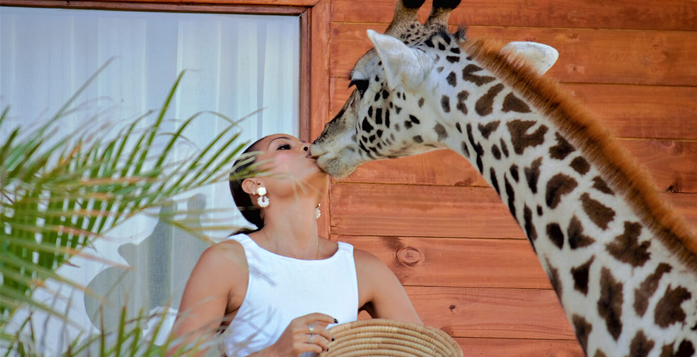
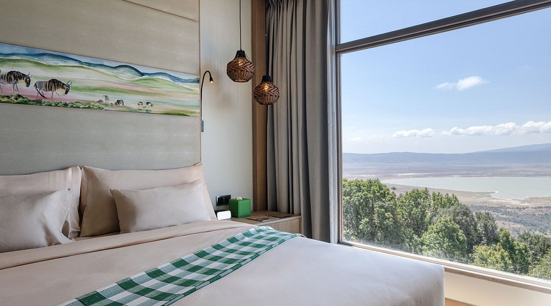
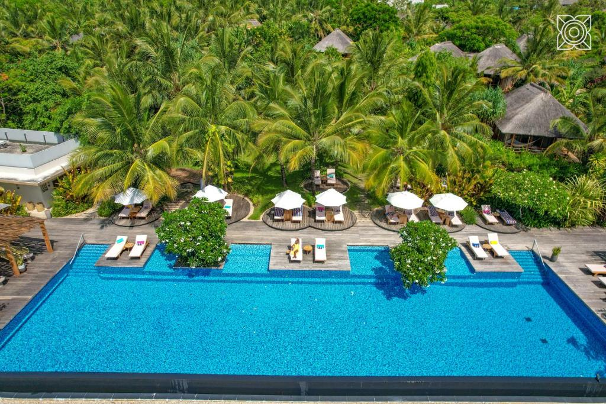

search
language
Experience the wild beauty of Tanzania, where romantic days unfold from the Serengeti's golden plains to the pristine beaches of Zanzibar.
Embark on an unforgettable 12-day romantic journey that combines Tanzania's iconic wildlife destinations with the tropical paradise of Zanzibar. This carefully curated honeymoon adventure offers the perfect blend of thrilling safari experiences, cultural immersion, and relaxing beach moments, creating memories that will last a lifetime.
Experience the raw beauty of the African wilderness as you begin with a unique stay at Serval Wildlife Lodge, where you can witness breathtaking views of Mount Kilimanjaro. Then explore the endless plains of the Serengeti, enjoy a magical hot air balloon safari, and descend into the spectacular Ngorongoro Crater—one of the world's largest intact volcanic calderas.
Following your safari adventure, unwind on the pristine white sands of Zanzibar. Explore historic Stone Town, dive into the vibrant underwater world, discover aromatic spice plantations, and experience the famous Blue Safari adventure. With days dedicated to pure relaxation, this itinerary offers the perfect romantic conclusion to your African adventure.
This journey is designed for couples seeking both adventure and relaxation, combining luxury accommodations with personalized service throughout. Whether you're watching wildlife on the Serengeti plains or enjoying a romantic dinner on the beach, this itinerary offers the ultimate honeymoon experience in Tanzania.
Upon your arrival at Kilimanjaro International Airport (JRO) at a time to be advised, you will be warmly welcomed by your professional driver-guide who will be waiting to receive you. From the airport, you'll be transferred to Serval Wildlife Lodge, located approximately 45 kilometers away—a drive that takes around 1 hour. After a brief introduction and a friendly welcome, you will be transferred to Serval Wildlife Lodge, a unique and serene retreat nestled in the heart of nature. Once you arrive and settle in, you'll have time to relax and enjoy the peaceful surroundings. In the evening, you'll be treated to a delicious dinner at the lodge, where you can unwind after your journey. Following dinner, your guide will conduct a detailed pre-safari briefing to prepare you for the exciting adventures ahead. You'll then spend the night at Serval Wildlife, resting up for the days to come.

After an early breakfast, your day begins with an immersive experience at Serval Wildlife Lodge. You'll spend the entire day enjoying a range of activities offered on-site, allowing you to connect closely with nature and the unique wildlife that calls this sanctuary home. Whether it's interacting with the animals, taking part in guided walks, or simply soaking in the peaceful atmosphere, there's plenty to explore and enjoy throughout the day. One of the highlights will be the chance to witness a stunning view of Mount Kilimanjaro—on a clear day, you'll be treated to a breathtaking, up-close perspective of Africa's tallest peak. All meals—breakfast, lunch, and dinner—will be provided at the lodge, and your overnight stay will once again be at Serval Wildlife, ensuring a comfortable and enriching experience.
Early this morning, after breakfast, you will depart from Serval Wildlife Lodge and head to Kilimanjaro International Airport for your scheduled local flight to the Serengeti. Upon arrival at the airstrip in Central Serengeti, you will be warmly welcomed by your professional driver-guide. From there, begin your private game drive across the vast savannahs of the Central Serengeti—home to a high concentration of wildlife including lions, leopards, elephants, and large herds of wildebeest and zebras. Spend the afternoon exploring the park's diverse ecosystems at your own pace. As the sun begins to set, you'll head to your luxury lodge located within the park for dinner and an overnight stay, surrounded by the sounds of the wild.

After an early breakfast at your lodge, set out for a full day of game drives in the heart of the Central Serengeti. This region, known for its year-round abundance of wildlife, offers incredible opportunities to witness the natural rhythms of the savannah. Traverse the open plains, rocky kopjes, and riverine woodlands in search of the Big Five—lion, leopard, elephant, buffalo, and rhino—as well as cheetahs, giraffes, and countless antelope species. Depending on wildlife activity and your preferences, you may enjoy a picnic lunch in the bush or return to the lodge for a hot meal and brief rest before continuing your afternoon exploration. As the golden light bathes the landscape toward evening, you'll have a final chance to spot predators on the hunt or herds gathering at watering holes. Return to your luxury lodge within the park for dinner and another overnight stay in the wild.

You'll have the opportunity to explore more of the central part of Serengeti in a private vehicle. The central Serengeti is home to a rich variety of wildlife, offering some of the best opportunities for observing large predators, including lions, leopards, and cheetahs, as well as herbivores such as gazelles, zebras, and buffaloes. The landscape is a mixture of open plains and woodland, providing diverse habitats and a constant flow of wildlife activity. During the game drives, you'll have the chance to spot wildlife in different settings and watch them interact in their natural environment. Whether it's a pride of lions resting under a tree or a cheetah stalking its prey, the central Serengeti offers incredible moments. After the day's exploration, you can return to your accommodation for a hot lunch and a bit of rest before heading out again for a late afternoon game drive. You will end the day with dinner and an overnight stay at your accommodation in the central part of Serengeti.
Your day begins with an unforgettable early morning hot air balloon safari over the Serengeti. As the sun rises over the endless plains, you'll float silently above the landscape, witnessing the beauty of the wildlife and scenery from a breathtaking aerial perspective—a truly magical experience. After landing, you'll enjoy a celebratory bush breakfast. After your breakfast you will drive to Ngorongoro Conservation Area via Maasai village, get a chance to experience one of best local tribes, get to learn on they ways of life before heading to your luxurious lodge at the crater rim for dinner and overnight.

Early morning after breakfast, we depart from your Lodge and make your way to the entrance crater gate, we descend into the breathtaking Ngorongoro Crater—one of the world's largest intact volcanic calderas—for an unforgettable day of exploration and game drives with packed lunch. The crater, often referred to as Africa's Eden, is home to an incredible diversity of wildlife, including the Big Five, and offers a chance to witness dramatic natural scenery and close encounters with animals in their natural habitat. After the game drive, we ascend back to the crater rim and begin our journey to Arusha, covering a distance of approximately 190 kilometers, which takes around 4 to 5 hours. Upon arrival in Arusha, you will head directly to the airport to catch your flight to Zanzibar. Upon landing in Zanzibar, you'll be met by your private driver at the airport who will transfer you to your beach accommodations. The day concludes with dinner and an overnight stay as you settle into the tranquil and tropical atmosphere of the island.

You will enjoy the famous Blue Safari experience in Zanzibar, a full-day adventure that showcases the island's stunning marine beauty. After breakfast, you'll set out on a traditional wooden dhow boat to explore the crystal-clear waters surrounding the island. The Blue Safari includes opportunities for snorkeling among vibrant coral reefs, swimming in natural lagoons, and relaxing on pristine sandbanks that appear and disappear with the tides. A fresh seafood lunch will be served on one of the remote islands, typically featuring grilled fish, lobster, calamari, and tropical fruits, all prepared in authentic Zanzibari style. Throughout the day, you'll be surrounded by turquoise waters, marine life, and the laid-back island atmosphere. After returning to your hotel in the late afternoon, you'll have time to unwind before enjoying a delicious dinner.
You'll dive into the rich history and culture of Zanzibar with a guided Stone Town exploration and Spice Tour. After breakfast, your day begins with a walk through the narrow, winding streets of Stone Town, a UNESCO World Heritage Site known for its unique blend of Swahili, Arab, Persian, Indian, and European influences. You'll visit key historical landmarks such as the House of Wonders, the Old Fort, the Sultan's Palace, and the former slave market, gaining insight into the island's vibrant past. After your city exploration, you'll head to a local spice farm to experience the famous Zanzibar Spice Tour. Here, you'll learn about the cultivation and uses of spices like cloves, nutmeg, cinnamon, turmeric, vanilla, and more—many of which are still grown traditionally. You'll get to see, touch, and taste various spices fresh from the trees and vines. A traditional Swahili lunch will be served at the spice farm, followed by a relaxing return to your hotel.
Today you will enjoy pure relaxation at your beach accommodation in Zanzibar. This day is yours to spend entirely at your own pace, with no scheduled activities—just time to unwind and indulge in the serenity of the island. Wake up to a delicious breakfast, followed by the freedom to relax on the white sandy beach, swim in the crystal-clear ocean, or lounge by the swimming pool. If you're feeling active, take advantage of the gym facilities available at the accommodation, or opt for optional spa treatments to further rejuvenate. Enjoy a laidback lunch with views of the sea and a peaceful afternoon soaking up the sun or exploring the resort grounds. In the evening, savor a flavorful dinner prepared with local ingredients, rounding out the day with a perfect blend of comfort and tropical charm.
Another day of pure relaxation at your beach accommodation in Zanzibar. These days are yours to spend entirely at your own pace, with no scheduled activities—just time to unwind and indulge in the serenity of the island. Wake up to a delicious breakfast, followed by the freedom to relax on the white sandy beach, swim in the crystal-clear ocean, or lounge by the swimming pool. If you're feeling active, take advantage of the gym facilities available at the accommodation, or opt for optional spa treatments to further rejuvenate. Enjoy a laidback lunch with views of the sea and a peaceful afternoon soaking up the sun or exploring the resort grounds. In the evening, savor a flavorful dinner prepared with local ingredients, rounding out each day with a perfect blend of comfort and tropical charm.
On your final day in Zanzibar, enjoy a leisurely breakfast and some last moments on the beach. Depending on your flight schedule, you may have time for some last-minute shopping or a visit to a local market on your own cost. You will then be driven to the airport for your departure, taking with you unforgettable memories of your Tanzanian adventure.
End of Itinerary
Compare prices across different group sizes for this luxury honeymoon safari and beach experience
| Accommodation Category | Price Per Person (2 People) |
|---|---|
| Luxury Accommodation | $12,500 |
Experience the wild like never before with our expertly crafted safaris